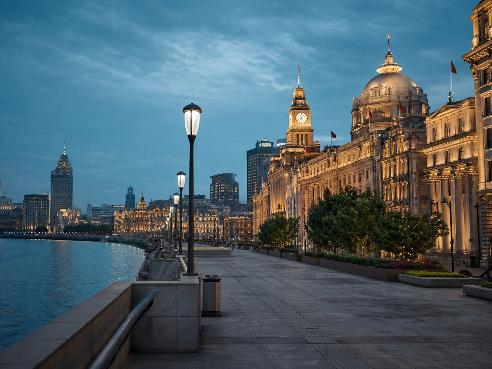
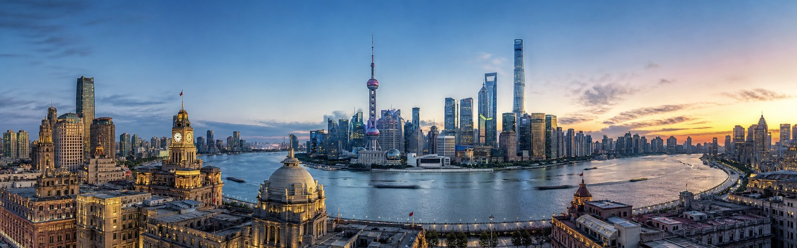
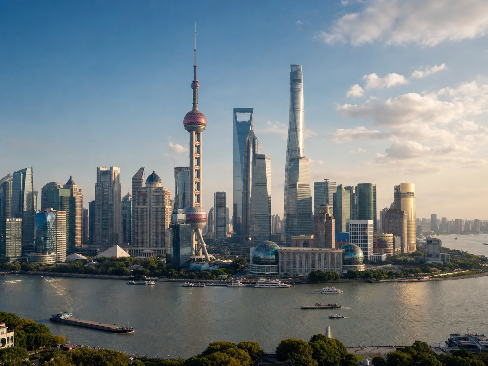
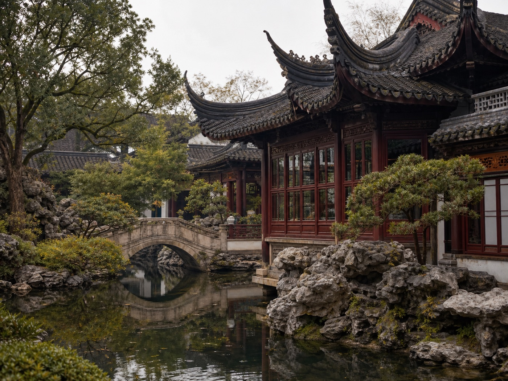
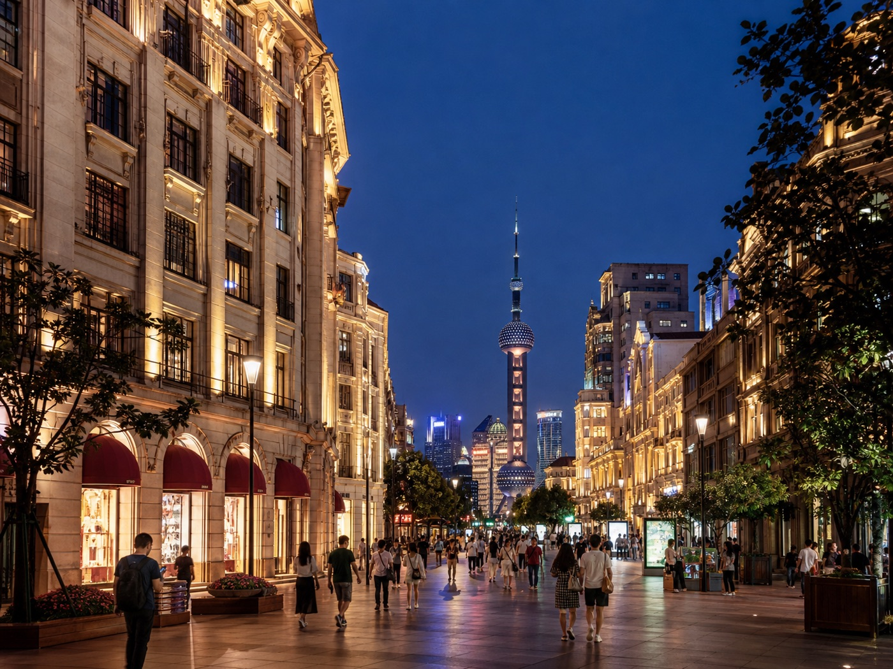
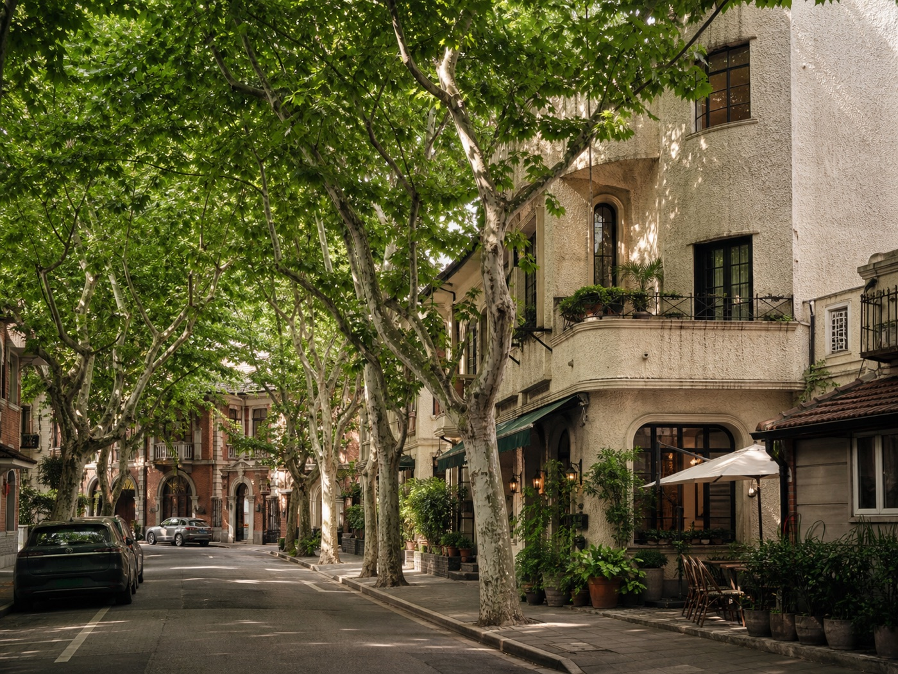
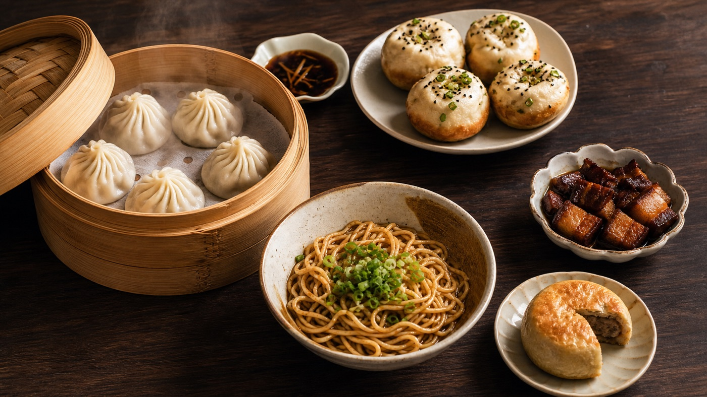

01
The Bund
Historic waterfront and essential skyline views after dark.

China's most international gateway
On China’s eastern coast, Shanghai is where modern ambition meets old-world atmosphere. It is the country’s most outward-looking metropolis: polished and fast-moving, yet full of lane-house neighborhoods, local breakfast stalls, Art Deco facades, and quiet pockets of everyday life. Several eras sit side by side in one city.
With direct connections to major cities worldwide and an easy international rhythm, Shanghai is one of the most comfortable places to begin a first trip to China. It feels familiar enough to settle in quickly, while Yu Garden, historic neighborhoods, local food, and life along the Huangpu River make the arrival unmistakably Chinese.
01
Start here

Historic waterfront and essential skyline views after dark.

Skyscraper viewpoints from the heart of modern Shanghai.

A classical Jiangnan garden beside the City God Temple.

An iconic pedestrian avenue linking city lights and history.

Leafy streets, cafes, and former French Concession architecture.
A full-day theme park experience beyond the city center.
02
Eat like a local

03
Recommended time
A comfortable first stay with room for both landmarks and local neighborhoods.
Get ItinerarySee the Bund and Lujiazui, explore Yu Garden, walk the former French Concession, and follow a local food route.
Add a museum or art district, then slow down for neighborhood cafes, markets, and an unhurried evening by the river.
Set aside a full day for Shanghai Disneyland without compressing the city itself.
Your Shanghai, made clearer
Tell us your dates, interests, and travel style. We’ll help shape a Shanghai stay that feels clear from the moment you arrive.
Start With Your Shanghai Trip